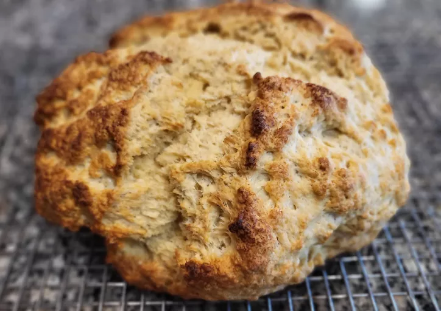

Irish Soda Bread Recipie
Description: Irish soda bread made with buttermilk and basic pantry ingredients. The buttermilk gives this crusty loaf a good flavor. It's the best Irish soda bread around!

Ingradients:
- 4 cups all-purpose flour
- ½ cup margarine or butter, softened
- 4 tablespoons white sugar
- 1 teaspoon baking soda
- 1 tablespoon baking powder
- ½ teaspoon salt
- 1 cup buttermilk
- 1 large egg
- ¼ cup butter, melted
- ¼ cup buttermilk
Directions:
- Preheat the oven to 375 degrees F (190 degrees C). Lightly grease a large baking sheet.
- Mix flour, softened margarine, sugar, baking soda, baking powder, and salt together in a large bowl. Stir in 1 cup of buttermilk and egg. Turn dough out onto a lightly floured surface and knead slightly. Form dough into a round loaf and place on the prepared baking sheet. Note that the dough will be a little sticky.
- Combine melted butter with 1/4 cup buttermilk in a small bowl; brush loaf with this mixture. Use a sharp knife to cut an 'X' into the top of the loaf.
- Bake in preheated oven until a toothpick inserted into the center of the loaf comes out clean, 45 to 50 minutes. Check for doneness after 30 minutes. You may continue to brush the loaf with the butter mixture while it bakes.